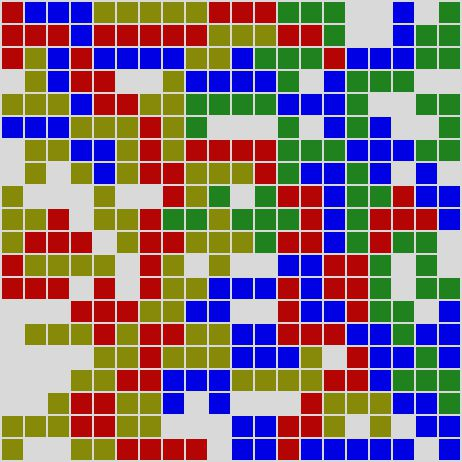

Block'em
Home
- Contents
- The most popular
Latest news
8th of March, 2011
New block'em website has been launched. Read more here19th of January, 2011
Blockem 0.3.2 has been released today! Download it from hereNews
People everywhere confuse what they read in newspapers with news
8th of March, 2011
The new block'em website has been launched today! Hope you like it as much as we do.
Thanks to Pat Heard (http://fullahead.org) for his LazyDays design, which is the base of the style sheet used here.
19th of January, 2011
Blockem 0.3.2 has been released today!
This release has solved a few bugs found in previous versions. A new 4-players mode has been also added to allow 4 human beings to play against each other (no AI available yet).
Have a look at the CHANGELOG for further information on the changes made for this release.
Have you found a bug? Have you thought of a new feature you'd love to see in block'em? Drop me an email with any comment you may have (including the negative ones). Alternatively you can file your request in sourceforge.
The project
But what is it good for?
Blockem is an open source clone of the board strategy game blokus. It is available for Unix-like systems and Windows and it is written in C++/GTKmm (the C++ wrapper of GTK+)
This project features:
- A 2-player mode (duo game), that can be played against the computer or between two human beings. Several types of AI are available when playing against the computer, all of them based on the minimax algorithm.
- A Single-player (solo) game, where you allocate all the pieces on the board. Starting position and size of the board are completely customizable.
- A 4-players mode, where all players are human. Starting position and size of the board are completely customizable too.
- A challenge mode. Basically a challenge describes a board (size and free squares) and a player -challenger- (set of pieces available plus starting position). A challenge is achieved when the challenger places all his/her pieces on the board.
- Blockem is available in two different languages: English and Spanish. I won't let go this chance to ask for help: If you are interested in translating it into your own language please visit the get involved page to learn more.
- Easily expandable mechanism to add new heuristics for developers. (read more about this here).
- Duo games can be set up between different AIs so that it can be used to compare heuristics.
Richard Stallman would be glad to know that blockem is free software released under GNU GPL v3.
Rules
Any game needs a set of rules
In block'em you've got 21 pieces to put down on the board (which are a set of all the possible free polyominoes from 1 to 5 squares). Basically you will have to put down as many pieces as possible while preventing your opponent from doing the same. There are 3 basic rules to place pieces on the board:
- In 1vs1 games the first piece played of each color is placed 5 squares far from one of the board's four corners. The opponent starts 5 squares far from the opposite corner.
- In 4 players games the first piece played of each color is placed in one of the board's four corners.
- Each new piece played must be placed so that it touches at least one piece of the same color, with only corner-to-corner contact allowed. (Edges cannot touch).
- When a player cannot place a piece, he or she passes, and play continues as normal. The game ends when no one can place a piece.
This is an example of how pieces have to be put down on the board. In this particular 4 players game, 3 of the players were able to deploy all their pieces, while the remaining one ended up with 7 pieces left (28 squares in total).

A hint of history
History is something that happens to other people
Blockem is the result of a bit of a obsession I have developed since I first discovered blokus back in 2008. In those days an idea crossed over our (my and my workmates') heads, create a smart blokus player to be used in one of the several blokus games we used to play whenever the 4th player was missing.
Later on, once the project was started, we realised a smart blokus player in a 4 player game is, firstly, much more complicated to develop, and secondly, much harder to prove to be smart, due to the nature of the 4-players blokus game. If you ever played a blokus game I am sure you have noticed 4-players blokus is not a fully strategical game, but more of a psychological one, since you can easily get ganged up by the other 3 players, isn't it James?
The project's aim changed then, and its full purpose was to try to create a computer player driven by AI to play duo games against a computer.
That was the beginning, but since then Block'em has evolved into something bigger and bigger by each version released...